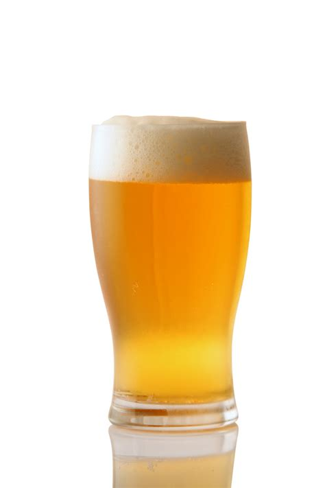

American Pale Ale

Description
A crisp and refreshing classic American Pale Ale. The bitterness from the hops
is perfectly balanced with the maltiness from the grain.
Ingredients
- 10 lbs Maris Otter
- 1 oz Chinook hops
- Wyeast 1056
Steps
- Mash at 152F for 60 mins
- Add Hops and boil for 60 mins
- Chill to 67F
- Pitch yeast and ferment until complete